1. La Technologie Web Fondamentale
Chaque site web que vous n’avez jamais visité est construit avec du code HTML.
Avec ce cours, vous serez capable de construire votre propre page web.
Le code HTML est basé sur des tags.
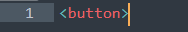Les balises utilisent les crochets angulaires < >.
Les crochets d’angle < > entourent le nom de l’élément que vous souhaitez ajouter à la page. Des éléments comme des boutons, du texte et des images sont ajoutés aux pages web avec différentes balises.
Tout commence avec une balise.
Vous pouvez utiliser la balise image (<img>) pour ajouter des images à une page web.
Vous avez besoin de balises HTML pour ajouter différents éléments à une page.
HTML vous permettra de :
- Créer des sites web
- Travailler plus efficacement avec des équipes techniques
- Améliorer les compétences en marketing numérique
La structure d’une page web est construite en HTML.
Vous pouvez ensuite styliser la page avec CSS.
JavaScript est utilisé pour rendre les pages interactives.
A retenir :
- Le code HTML contrôle la structure d’une page web.
- Les balises HTML sont utilisées pour ajouter des éléments à une page web
- Quelques exemples de balises HTML sont <button>, <img>, <table> et <p>
Dans la prochaine leçon, vous commencerez à écrire, exécuter et tester du vrai code dans Sublime Texte.
2. Code HTML
Le code HTML indique au navigateur (par exemple, Chrome, Safari, ect.) comment afficher une page web.
Vous commencerez à écrire, exécuter et tester du vrai code HTML dans cette leçon pour construire la structure d’une page web.
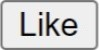Des nombreux élément HTML nécessitent à la fois des balises d’ouverture et de fermeture.
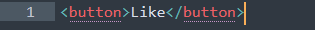Les balises de fermeture sont très similaires aux balises d’ouverture. La seule différence est qu’elles contiennent une barre oblique /.
Vous pouvez personnaliser le texte du bouton. Le contenu du bouton est placé entre les balises.
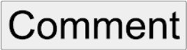De nombreux éléments nécessitent à la fois des balises d’ouverture et de fermeture, également appelées balises conteneurs. Le texte du paragraphe en est un autre exemple.
Vous pouvez combiner plusieurs éléments dans votre code.
C’est l’heure de coder !
Ouvrez Sublime Texte si vous le l'avez pas vous pouvez le télécharger ici pour écrire le code ci-dessous et enregistrer avec sous le nom exemple.html
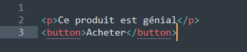Ouvrez le fichier sur le navigateur web pour voire le résultat.
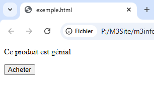Votre navigateur web (par exemple, Chrome, Safari, ect.) peut lire le code HTML et le traduire en ce que vous voyez lorsque vous surfez sur le web.
A retenir
- Des éléments comme les boutons et les textes des paragraphes nécessitent des balises conteneurs.
- Les balises conteneurs se composent à la fois d’ouverture < > et de fermeture </ > des balises.
- Vous pouvez utiliser Sublime Texte pour écrire et le navigateur web pour tester du vrai code HTML.
Dans la prochaine leçon, vous apprendrez un nouvel élément HTML : le titre.
3. Titres (Headings) :
Le texte sur les pages web peut être organisé en différentes sections, avec des titres. Les titres aident également les monteurs de recherche comme Google à comprendre de quoi parle votre page pour la montrer aux bonnes personnes.
Les titres en HTML existent à différents niveaux. <h1> définit le titre le plus important.
Vous pouvez utiliser jusqu’à 6 niveaux de titres en HTML. Les balises pour ces éléments de titre sont <h1>, <h2>, <h3>, <h4>, <h5> et <h6>.
Les en-têtes sont un autre élément qui nécessite à la fois des balises conteneur d’ouverture et de fermeture.
Vous pouvez ajoutez différents titres à votre page pour organiser le contenu.
Exemple :
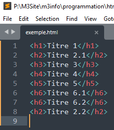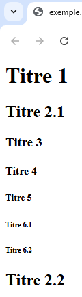
Vous pouvez combiner des en-têtes avec d’autres éléments.
Exemple :
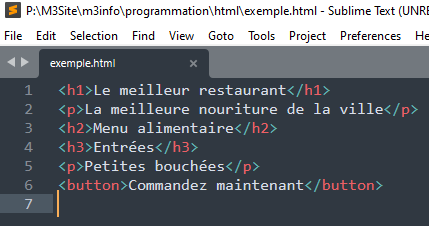
h1 es l’en-tête le plus important.
Vous ne devriez avoir qu’un seul en-tête de niveau 1 par page.
Les niveaux de titre doivent être utilisés dans le bon ordre (h1, h2, …h6)
Après votre h1, vous pouvez utiliser autant de h2 que vous le souhaitez, après chaque h2 vous pouvez inclure des h3, et ainsi de suite.
Certains éléments HTML peuvent être définis avec un seul tag. Ils appelés tags vides.
La balise image <img> est un bon exemple de balise vide, elle ne nécessite pas de balise de fermeture.
A retenir
- Il y a de nombreux avantage à utiliser des headings dans vos pages.
- Vous pouvez utiliser jusqu’à 6 niveaux de headings.
- Les headings nécessitent des balises conteneur.
Dans la prochaine leçon, vous apprendrez comment ajouter des images et commencer à construire votre propre projet HTML.
4. Images
Une image vaut mille mots ! Les pages Web avec des images obtiennent plus de vues, sont mieux classées dans les résultats de recherche et sont plus partagées sur les médias sociaux.
Dans cette leçon, vous apprendrez à ajouter des images à vos pages.
Les images ne nécessitent qu’une seule balise pour être affichées sur votre page web.
Les images ne sont pas techniquement insérées dans une page web, elles sont liées. La source (src) de l’image doit être incluse dans la balise.
Vous devez indiquer au navigateur où trouver l’image. La source (src) est l’emplacement sur internet où l’image est stockée.
Les navigateurs Web demandent des informations au Web pour assembler et afficher des pages Web.
Le code, les documents et les fichiers multimédias tels que les images et les vidéos sont assemblés par le navigateur pour afficher le page Web résultante.
Les serveurs Web sont des ordinateurs qui sont toujours connectés à Internet et qui écoutent continuellement les demandes d’informations.
La source (src) dans la balise image pointe vers le serveur où l’image peut être trouvée.
Le URL est un emplacement (ou adresse) sur le Web. L’URL de l’image doit être enfermée dans des guillemets simples ou doubles.
L’icône d’image cassée est généralement affichée sur les pages Web lorsque quelque chose ne va pas avec l’image.
Vous pouvez maintenant inclure 4 types différents d’éléments dans vos pages web. Mettons cela en pratique.
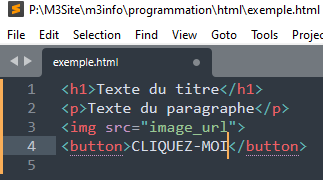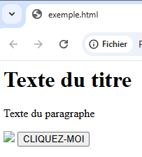
Le navigateur web aura du mal à comprendre votre code s’il y a des erreurs. Cela peut entraîner des éléments manquants.
Les erreurs dans le code HTML peuvent inclure des guillemets manquants, des balises manquantes et des fautes de frappe en général. Pouvez-vous corriger les erreurs ?
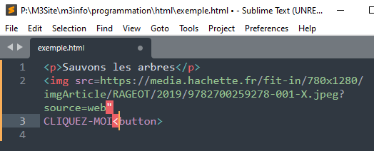Les images ne nécessitent pas de balises de fermeture. Une seule balise (<img>) suffit pour lier une image à une page web. Les balises d’image sont des exemples de balises vides (non- conteneur).
A retenir
- Les images peuvent être liées ou intégrées dans des pages web
- Les images n’exigent pas de balises de clôture
- La source (url) de l’image est nécessaire pour que l’image puisse être trouvée sur internet
Dans le prochain chapitre, vos commencez à appliquer certaines des normes et des meilleures pratiques que les concepteurs et développeurs web utilisent pour créer de vraies pages.